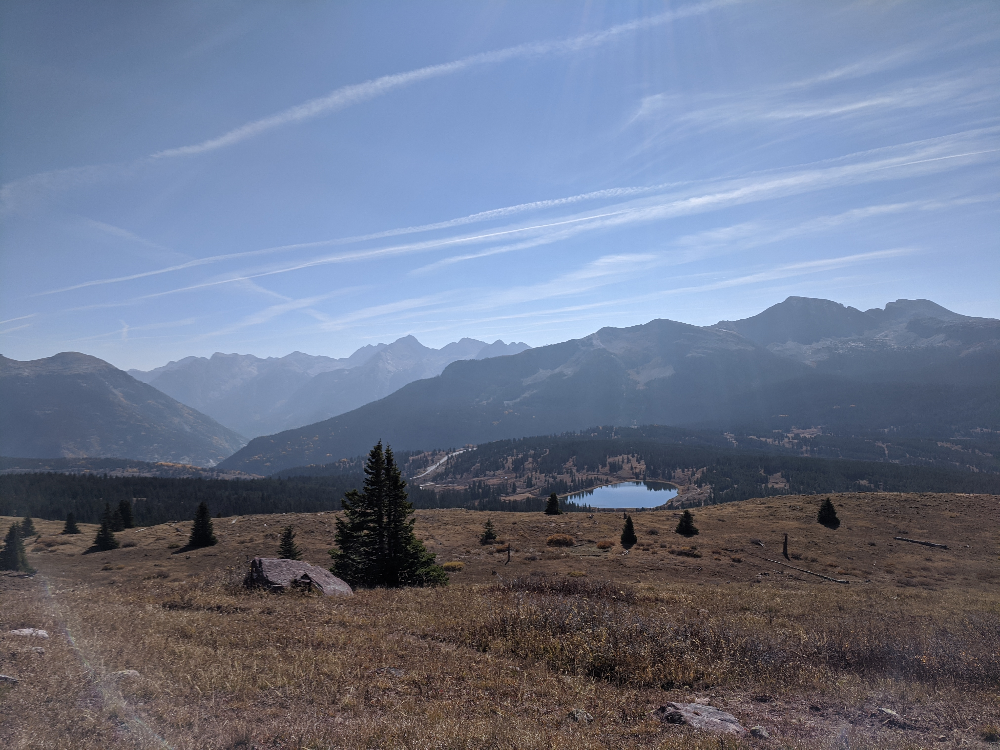
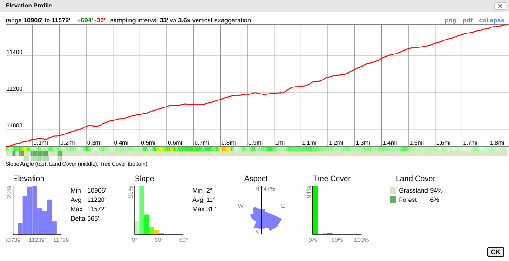

Updated as of 02/03/2021
Overview
Ben and Rachelle will be getting married at a remote location along the Colorado Trail
in the San Juan mountains of Colorado. The festivities are expected to take the entire
day and include hiking to and from the ceremony location, the ceremony itself, and a short
reception/dinner afterwards.
Ceremony Details
Date: June 4th, 2021
Location: Little Molas Lake
Schedule:
Attire: Business Casual
Location: Little Molas Lake
Schedule:
- 8:00am - Breakfast (Provided) + Preparations
- 9:30am - Depart for Trailhead
- 10:30am - Meet at Trailhead w/ Photographer
- 12:30pm - Ceremony
- 1:00pm - Pictures
- 1:30pm - Snacks / Light Lunch (Provided)
- 3:30pm - Leave Trailhead
- 4:00pm - Reception + Dinner (Provided)
Attire: Business Casual
- Men should wear khaki or similar colored pants (see Ben's pants here) and a light colored button up shirt (preferably white or off white)
- Women should wear a dress or skirt with a blouse
- Preferably floral, pastel, and/or earth tones
- We hope you can find something to wear that you already own that are within these guidelines
- Keep in mind that you will be hiking to the ceremony location so you may want to choose attire you can hike in or plan on changing on site.
- The ceremony location is out in the open so if you are planning on changing there will be no facilities.
- If you have specific questions about the attire please get in touch with us. We are pretty flexible and want to make sure everyone is comfortable.
Notes: We expect to wear face masks at the trailhead and along the trail as we will likely encounter
other people. Masks will not be worn during the ceremony. There will not be any seating for the ceremony so
expect to stand for ~30min (likely less). We will have a professional photographer hiking with us and during
the ceremony but please feel free to take as many photos/videos as you want.

Approaching ceremony location along the trail, ceremony will be held just beyond the grove of trees

Looking east from the ceremony location into the Weminuche Wilderness
Little Molas Lake Description
Little Molas Lake is located at a small National Forest
Campground about a 10min drive south of Silverton, CO. The trailhead is accessible via a short (~1mi) dirt road
(FR 584) off of US Highway 550
that is well graded and 2WD accessible.
The ceremony itself will take place in the alpine tundra just south of West Turkshead Peak.
To access this location, we will be hiking ~2mi up the Colorado Trail (Segment 25).
This trail is very mild and well graded but does not have any shade. The trail will be gaining ~700ft in elevation.

Trail profile from trailhead to ceremony location
Trail profile from trailhead to ceremony location
Some advice for the hike:
Note: If for some reason snow or inclimate weather prevent the ceremony from being held as intended the backup plan will be to hold the ceremony directly at Little Molas Lake. If that is also not possible then the ceremony will be held at the lodging location.
- Drink plenty of water
- Wear sunglasses and plenty of sunscreen
- There’s a possibility there will be some snow on the trail so be prepared for that
- The weather should be fairly mild (low to mid 60s) but it may windy
- Bring warm hat, gloves, and a jacket (hopefully these won’t be needed)
- Bring/wear a hat that can provide shade
- Trail runners or sneakers will likely be sufficient but feel free to wear boots if you prefer more support
Note: If for some reason snow or inclimate weather prevent the ceremony from being held as intended the backup plan will be to hold the ceremony directly at Little Molas Lake. If that is also not possible then the ceremony will be held at the lodging location.